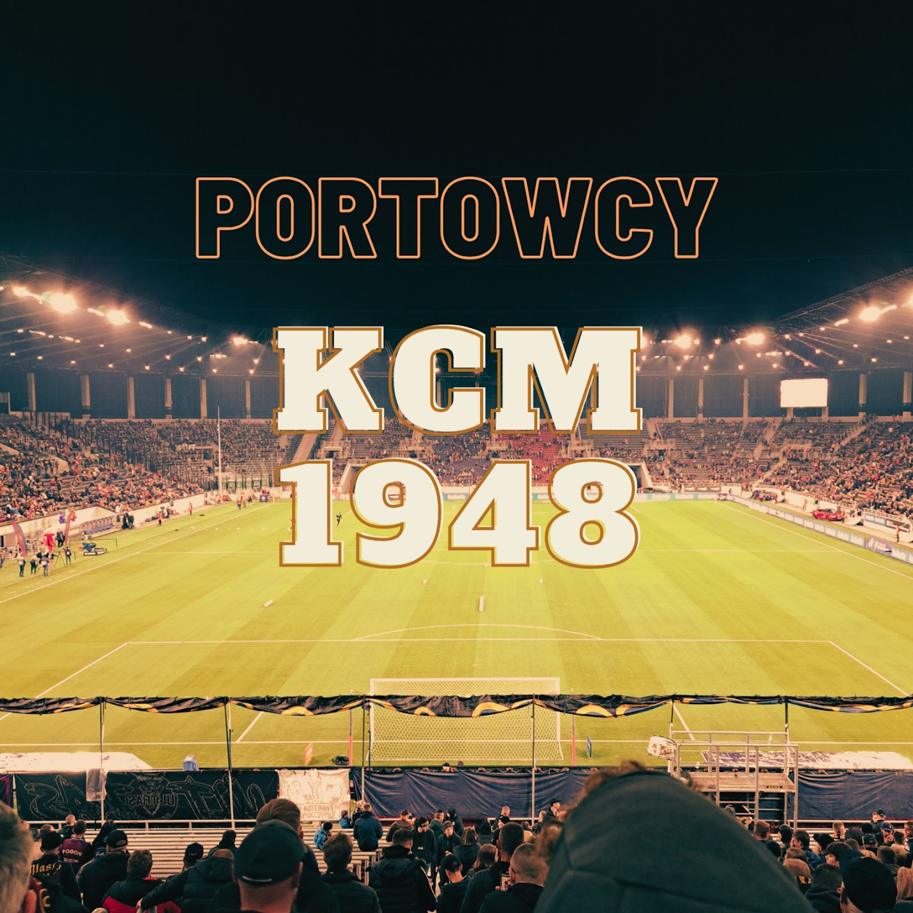

KCM1948
MUZYKA · EMOCJE · TOŻSAMOŚĆ
Każda historia
ma swoje barwy.
KCM1948 — muzyczny świat Karola Carlo Małolata. Autorskie utwory, stadionowe emocje i dźwięki, które zostają z Tobą na dłużej.
WŁĄCZ GŁOŚNIEJ. POCZUJ WIĘCEJ.
DŹWIĘKI, KTÓRE ZOSTAJĄ
Muzyka KCM1948
↗
KCM1948
Zwycięska Pieśń
KCM1948
Mary Jane
KCM1948
Granatowo Bordowy Sen
KCM1948
Mam już dość
KCM1948
Nie wiem, czy dotrwam dziś
KCM1948
Ona chciała mnie
KCM1948
Zawsze Tam
KCM1948
Zapalimy
KCM1948
Bawara sobie lata
KCM1948
Finał
KCM1948
Lecę Tam
KCM1948
Hejter
KCM1948
No merci
KCM1948
K + C = M
KCM1948
Defensywa
KCM1948
OnTour
KCM1948
Piękna i Bestia
KCM1948
Zatańcz
KCM1948
Kibicowski Świat
KCM1948
Miłość do piłki
KCM1948
Hymn Kibica
KCM1948
Było wtedy
Wybrane utwory przesuwają się automatycznie. Kliknij kafelek, aby odtworzyć teledysk.
PEŁNE WYDANIE
Album KCM1948

ALBUM · 20258 UTWORÓW · 21 MIN
PORTOWCY (ULTIMATE)
WKRÓTCE...
NADCHODZĄCY ALBUM
X PRZYKAZAŃ
POZNAJ TWÓRCĘ
Internet to mój kanał.
Muzyka — mój język.
Nazywam się Karol Carlo Małolat i tworzę jako KCM1948. W internecie rozwijam własny projekt muzyczny — publikuję autorskie utwory, teledyski i materiały w mediach społecznościowych.
W mojej twórczości ważne miejsce zajmują kibicowskie emocje i Pogoń Szczecin. To słychać w takich tytułach jak „Stadionowy klimat”, „Zwycięska Pieśń” czy „Granatowo Bordowy Sen”. Obok nich są też bardziej osobiste historie i różne muzyczne odsłony.
Ważną częścią projektu jest album „PORTOWCY (ULTIMATE)” — osiem utworów zebranych w jednym wydaniu. Całość łączy piłkarską pasję, stadionową energię i własny, rozpoznawalny świat KCM1948.
Na YouTube dzielę się muzyką i klipami, a na Instagramie oraz Facebooku pokazuję projekt z bliższej, codziennej perspektywy. KCM1948 to niezależna droga twórcza — budowana utwór po utworze i bez udawania kogoś innego.
Zobacz kanał KCM1948ZOSTAŃMY W KONTAKCIE
Dołącz do mojego świata.
Nowa muzyka, materiały zza kulis i codzienne chwile — znajdź KCM1948 na platformach społecznościowych i streamingowych.
Linki do serwisów streamingowych otwierają wyszukiwanie KCM1948 — oficjalne profile muzyczne dodamy po potwierdzeniu ich adresów. W sprawie współpracy napisz na kcm1948ps@gmail.com.